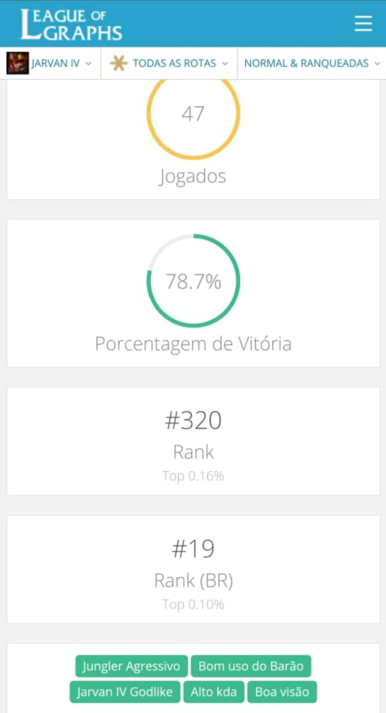

Em 2020 foi a primeira vez que peguei diamante, 2017, 2018 e 2019 eu cheguei bem perto, em todos esses anos eu fiz uma MD5 pra entrar no diamante, mas nao consegui em nenhuma.

Nao tenho muitos prints da primeira vez que peguei diamante, devem ter se perdido, só tenho esse de um dos momentos que eu estava subindo.